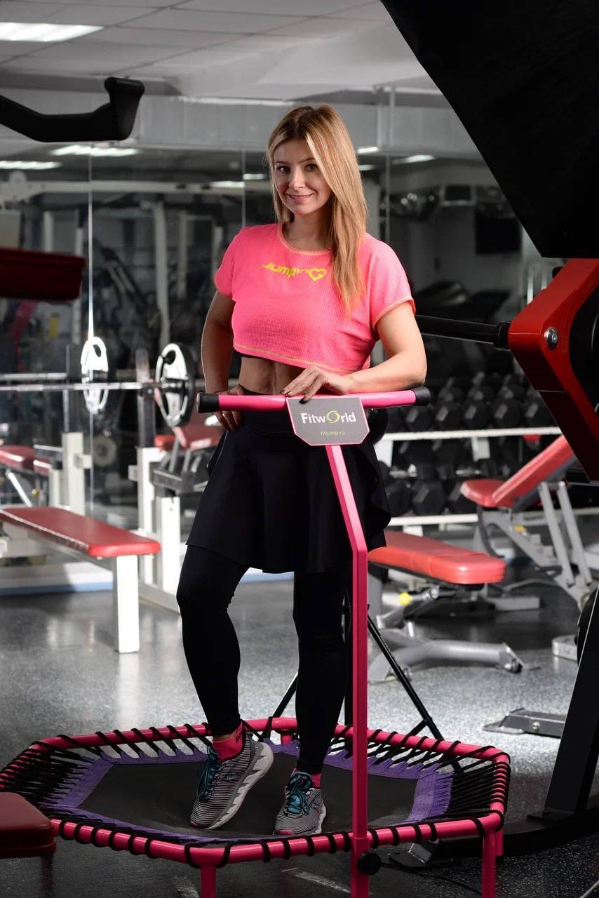

Открытые тренировки · Судостроительная 41
Прыгай как ракета — худей как чемпион.
45 минут — и ты залипаешь на свои стройные ноги.
CyberJumping Екатерины Старостиной · Судостроительная, 41
Никаких абонементов. Разовое занятие — как прыжок за счастьем.

/02 · железо
Это твоя
ракета.
12 промышленных пружин, 6-гранная сетка-кевлар, рама-сталь. Прыжки тише бега, отдача в три раза мягче.
- / пружин12 промышленных
- / мат⬡ 88 см · кевлар
- / опор6 точек · резина
- / максдо 120 кг
- / шум32 дБ — тише бега
Танцы? Скучно. Бег? Убивает колени. Джампинг — взрыв мозга и тела.
-
01
Ты устанешь через 10 минут
И это нормально. На батуте сердце работает быстрее, чем при беге, — но без боли.
-
02
Ни одного удара по суставам
Спасибо батуту. Колени, голеностоп и поясница остаются с тобой ещё лет 40.
-
03
Эндорфины × 3
Выше, чем после секса. Мы проверили. Возвращаться сюда — почти зависимость.
«Я научу прыгать даже тех, кто боится собственной тени. Серьёзно.»
04 · Координаты
Наш космодром —
Судостроительная, 41
Внутри — кондиционер, музыка и никакого «мы вас ждём к 8 утра».
- / адресМосква, Судостроительная, 41
- / тел+7 916 491 77 18
Не думай. Прыгай.
Одно сообщение в Telegram — и ты в деле. Я (Катя) отвечу на всё: от «а что надеть» до «а можно в первый раз без мата?».
Записаться в TelegramРаботаю с живыми людьми. Автоответчика нет. Бота — тем более.